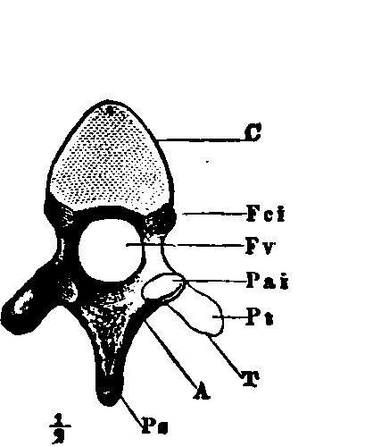
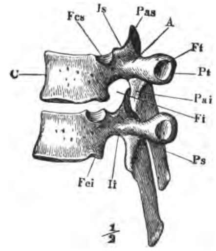

The Vertebral Column
Description
This section is from the book "The Human Body: An Elementary Text-Book Of Anatomy, Physiology, And Hygiene", by H. Newell Martin. Also available from Amazon: The Human Body.
The Vertebral Column
(Fig. 9.) The upper portion of the spine consists of twenty-four separate bones, each called a vertebra; these are piled one above the other, and separated by elastic pads made of cartilage and connective tissue. Seven vertebræ (cervical, C 1-7) are found in the neck ; twelve (dorsal, D 1-12) lie at the back of the chest and carry the ribs; and five (lumbar, L 1-5) are in the loins.
Below the separate vertebræ comes the sacrum, (S 1), which is shown as seen from its ventral aspect in Fig. 10, along with the lowest lumbar vertebra. In childhood the sacrum consists of five distinct vertebræ, but these grow together afterwards, though cross ridges remain indicating the original lines of separation. Succeeding the sacrum and forming the lower end of the spine is the coccyx (Co, 1-4, Fig. 9), a single bone in adults, though consisting of four pieces in children.
The Structure Of A Vertebra
Those vertebræ which remain permanently separate resemble one another in general form, with the exception of the uppermost two. As an example we may take the eleventh from the skull, that is the fourth dorsal vertebra (Figs. 11 and 12).
In it we find (1) a thick bony mass, C, rounded on the sides and flattened above and below where it is turned toward its neighbors ; this part is the centrum or body of the vertebra; the series of vertebral bodies forms the bony partition (e, e, Fig. 1) already mentioned as existing in the trunk between the neural and haemal cavities. (2) An arch attached to the dorsal side of the centrum ; it is the neural arch, A, and with the centrum incloses the neural ring (Fv). The vertebræ being piled one above the other the successive neural rings form the neural tube, in the cavity of which the spinal cord lies. (3) Projecting from the body and arch are several processes ; one reaching out from the dorsal side of the arch is the spinous process; the row of spinous processes which may be felt through the skin along the middle of the back has given the name of spinal column to the whole backbone.
Of what is the upper portion of the backbone composed? What are the bones forming it called? What lies between them? How many vertebræ in the neck ? In the chest region? In the loins?
Of what parts is the lower portion of the vertebral column composed? How many vertebræ form the sacrum? At what period of life are they separate? How is this original separation indicated on the sacrum of adults? How many vertebræ are united to form the coccyx?
What vertebræ differ essentially in form from the rest? Describe a typical vertebra.
Fig. 11. A dorsal vertebra seen from behind, i.e., the end turned from the head.
Fig. 12. Two dorsal vertebræ viewed from the left side, and in their natural relative positions. C, the body ; A, neural arch ; Fv, the neural ring; Ps, spinous process; Pas, anterior articular process : Pai, posterior articular process: Pi, transverse process; Ft, facet for articulation with the tubercle of a rib; Fcs, Fci, articular surfaces on the centrum for articulation with a rib.
What constitutes the hard partition between the dorsal and ventral cavities of the trunk? How is the neural tube formed? Why is the spinal column so named ?
Where the arch joins the centrum it is narrowed to a stalk or pedicle, li, Fig. 12. When the vertebræ are placed together in their natural relative positions, apertures (Fi), leading into the neural canal, are left between their narrower portions; through these apertures (called the intervertebral foramina) nerves pass out from the spinal cord.
Continue to: